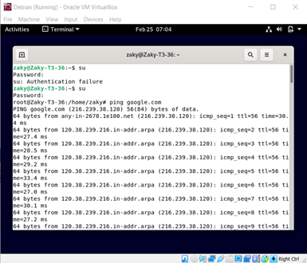
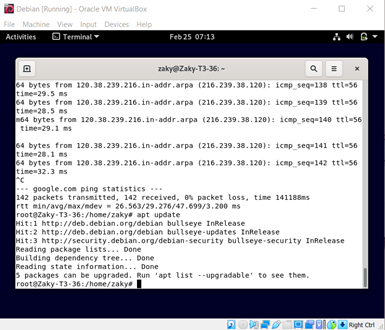
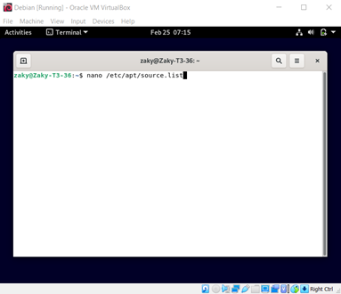
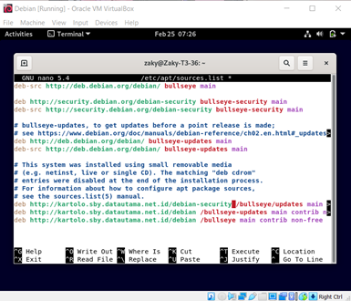
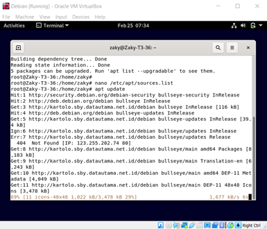
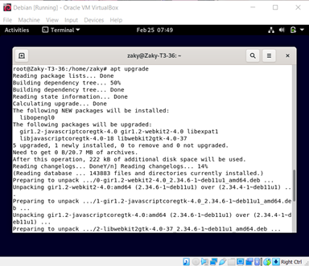
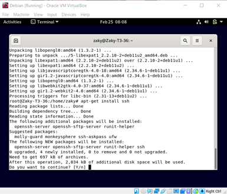
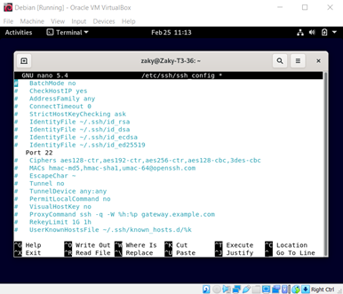
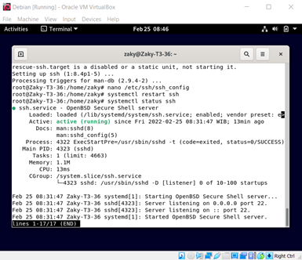

Menambahkan Repository
1. Pertama, gunakan command su lalu masukkan password root untuk membuka root

2. Lalu gunakan command apt update untuk mengecek update

3. Gunakan command nano /etc/apt/source.list untuk melihat daftar sumber update

4. Tambahkan source data utama secara manual dibawah tulisan yang sudah ada, saya menambahkan source-source ini
deb http://kartolo.sby.datautama.net.id/debian/ bullseye main contrib non-free
deb http://kartolo.sby.datautama.net.id/debian/ bullseye-updates main contrib non-free
deb http://kartolo.sby.datautama.net.id/debian-security/ bullseye/updates main contrib non-free
lalu klik Ctrl C dan klik y. setelah itu tekan Enter

5. Gunakan apt update untuk mengupdate source debian

6. Gunakan apt upgrade untuk mengupgrade debian nyar

7. Install ssh untuk memudahkan dalam mengontrol debian dengan command apt-get install ssh

8. Ketik command nano /etc/ssh/ssh_config lalu hapus # dari # Port 22 seperti contoh

9. Gunakan command systemctl restart ssh untuk memulai ulang ssh(apabila berhasil tidak akan menunjukkan pesan eror), dan gunakan command systemctl status ssh untuk melihat status ssh
